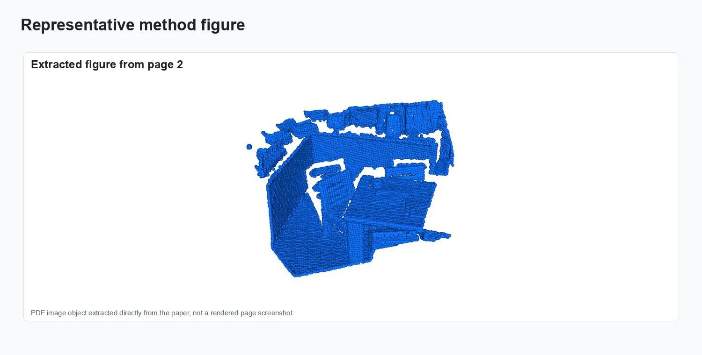
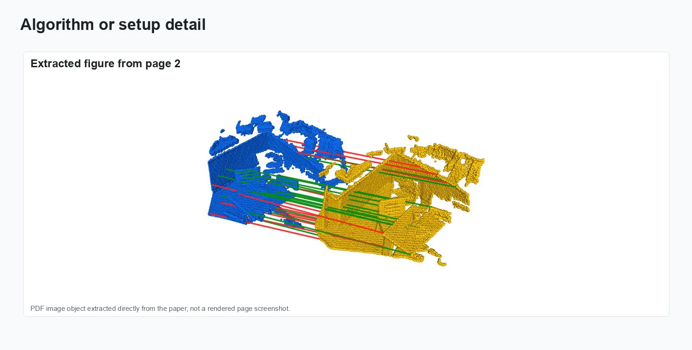
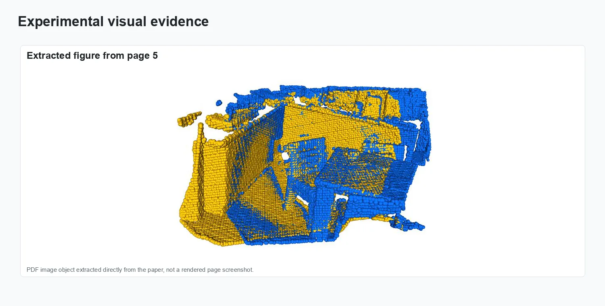
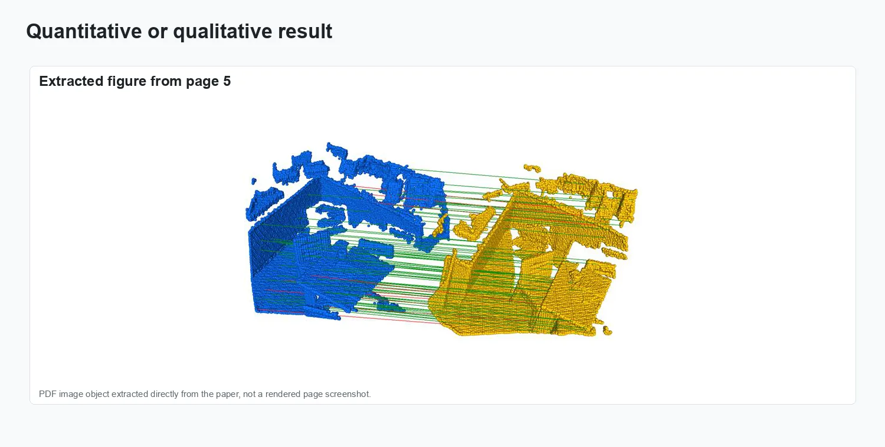
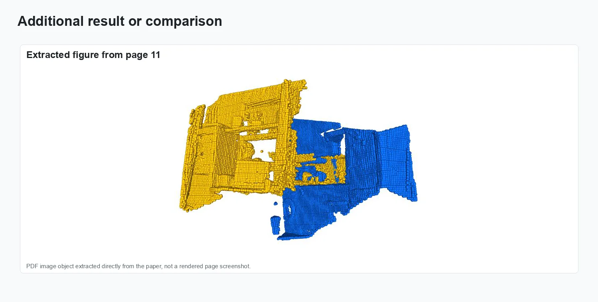

TopFormer: Topology-Aware Transformer for Point Cloud Registration

Point cloud registration requires finding reliable correspondences between two scans of the same scene. Transformer-based methods have improved on classical descriptor matching by using attention to capture global context, yet they remain vulnerable to scenes with repetitive geometric motifs—tiled floors, uniform walls, symmetric objects—where many local regions appear nearly identical. TopFormer tackles this robustness gap by enriching transformer feature tokens with topological structure descriptors that capture how each surface point connects to its neighbours at multiple scales. These topological features provide information not available in standard geometric or learned local descriptors: two patches that look locally similar may have different global connectivity signatures, making them distinguishable. TopFormer integrates these topology-aware tokens into a standard transformer matching pipeline with minimal added complexity. Presented at the International Conference on Computational Visual Media (CVM) 2024, the method achieves competitive or superior registration recall on 3DMatch and KITTI benchmarks, with the clearest gains on the challenging low-overlap evaluation split where conventional attention-based methods degrade most.
Problem setting
Transformer-based point cloud registration methods have achieved strong performance by matching local geometric descriptors with global attention, but they still struggle in scenes with repetitive geometry or limited texture where local shape alone is insufficient to distinguish correspondences. TopFormer addresses this by incorporating topological structure descriptors—derived from persistent homology or graph connectivity of the local neighbourhood—into the transformer feature tokens. These topology-aware tokens encode how each point sits within the broader surface topology, providing a complementary discriminative signal that reduces false matches in symmetric or repetitive regions.
The figures below collect representative visual evidence from International Conference on Computational Visual Media (CVM) 2024, 112–128.
Method and visual evidence
The visuals show topology-aware descriptors, the transformer matching pipeline, and registration comparisons in geometrically ambiguous scenes.

Method overview.

Representation and setup.

Experimental evidence.

Result comparison.

Additional visual result.
Results and impact
The evaluation reported in International Conference on Computational Visual Media (CVM) 2024, 112–128 is summarized through the figures above.